01
Selected Work
01
University of Hull
Verbal Identity & Advertising Launch Campaign
University of Hull
Verbal Identity & Advertising Launch Campaign


The challenge
Hull University was approaching its centenary in difficult times. Brexit had hit higher education hard. The city's maritime glory was history. The university had narrowed to a 'hyperlocal' institution – recruiting almost exclusively from its own postcode. It needed a new story, and a new way of telling it.
What I did
Working with long-term collaborators PUSH Collective, I led the evolution of Hull's brand voice and launch campaign in video, digital and OOH. I developed a verbal identity built on Hull's outsider spirit and contrarian character – the "voice of irreverence" – and coined a new word to anchor it: unsame. A word that didn't exist, for a university that refused to be what everyone expected. Then I trained internal writers and external agencies how to implement this new brand voice across all media.
The outcome
A new brand voice and campaign with genuine cultural traction. Same old unsame since 1927 – built around a single invented word that said everything about what Hull is, and who it's for.
02
Aware Super
Renaming, Rebranding & Brand Voice
Aware Super
Renaming, Rebranding & Brand Voice
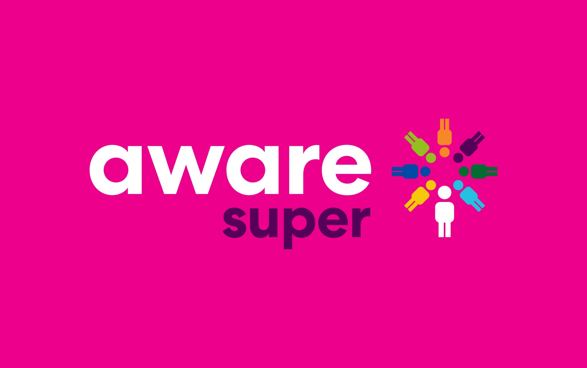
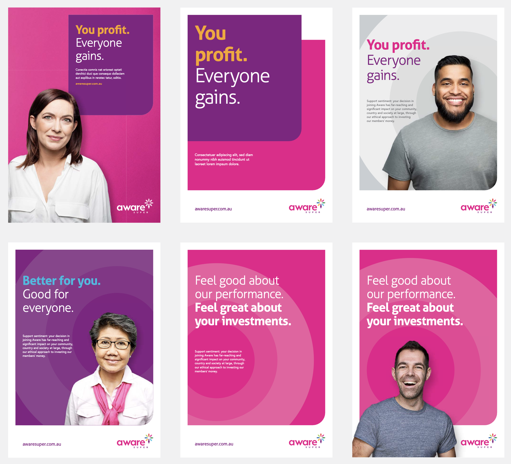
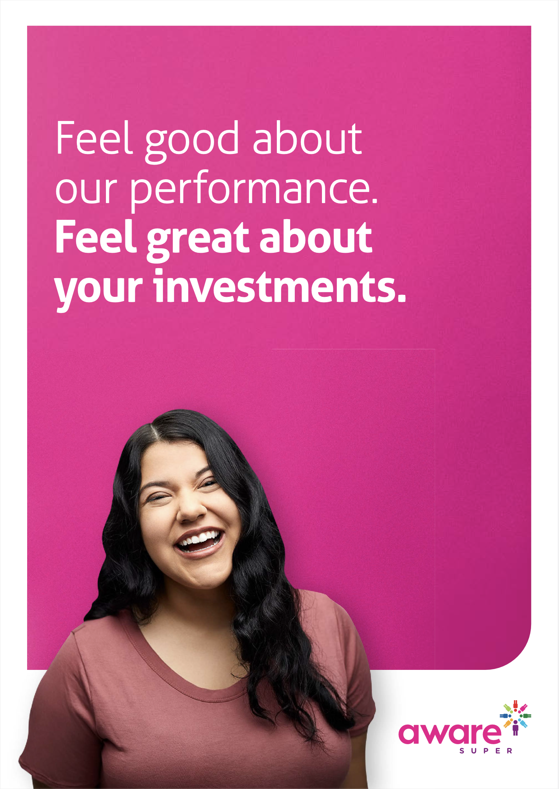
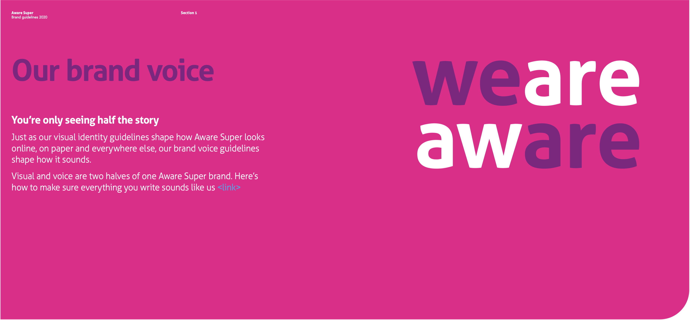
The challenge
Australia's third largest super fund had grown through acquisition. They absorbed multiple industry funds under the First State Super umbrella including $163.8 billion in assets, 1.19 million members, and a brand that no longer reflected who they'd become. They needed a new name and brand that could unite diverse cultures and communities under one clear identity.
What I did
I renamed the fund Aware Super – a name that captures exactly what sets them apart: a commitment to responsible, socially conscious investing that delivers financial returns and positive social outcomes. Together with my design partner we created a new visual identity. I then built the full verbal identity and brand voice guidelines to carry that thinking into every word they publish.
The outcome
A new name for how they've always been. Aware Super launched with a unified brand platform and campaign – You profit. Everyone gains. This spanned advertising, member communications, and comprehensive brand guidelines for their internal teams and agencies.
03
Squeaky Gate
Naming
Squeaky Gate
Naming
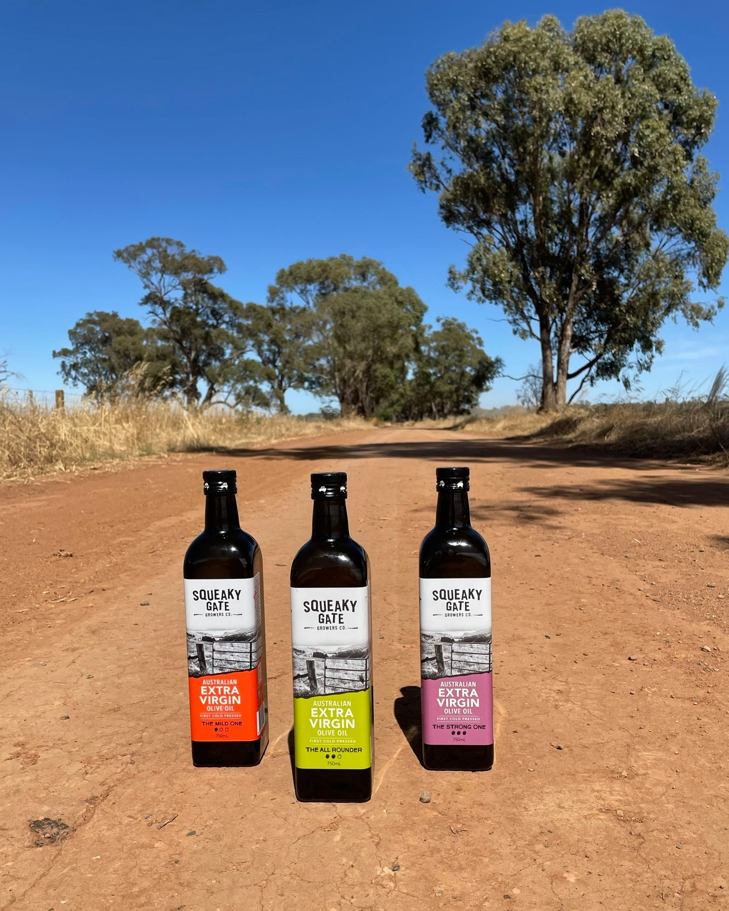
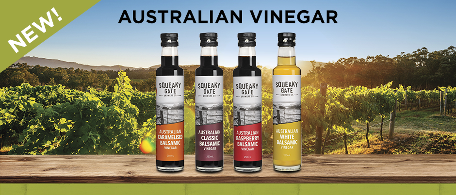
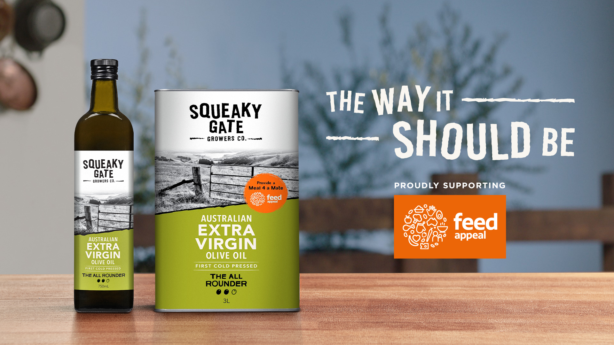
The challenge
Conga Foods saw a gap in the market for a premium Australian olive oil brand – one that would resonate with supermarket shoppers and feel genuinely rooted in the land it came from. They needed a name that could do all of that without trying too hard.
What I did
I named it Squeaky Gate. The reasoning was simple: there's a squeaky gate on every farm I've ever been to. It's the most Australian thing in the world – familiar, honest, a little rough around the edges. Exactly right for an oil that follows the harvest around the country.
The outcome
A decade on, Squeaky Gate is selling strongly in Coles, Woolworths, IGA and independents across Australia. The name proved so durable that the brand has since expanded into a full range of balsamic vinegars – still flying the same flag.
04
Dappa
Naming & Brand Identity
Dappa
Naming & Brand Identity
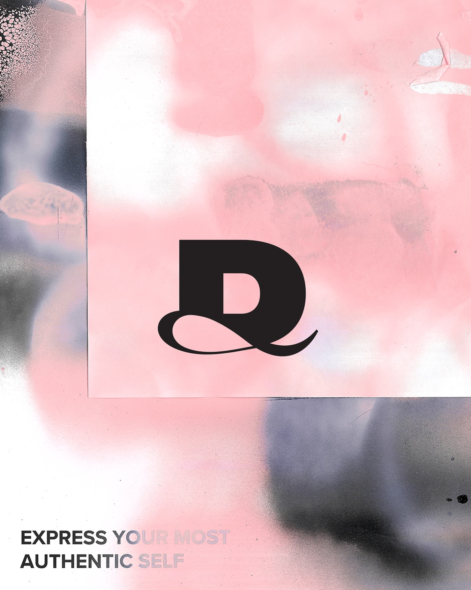
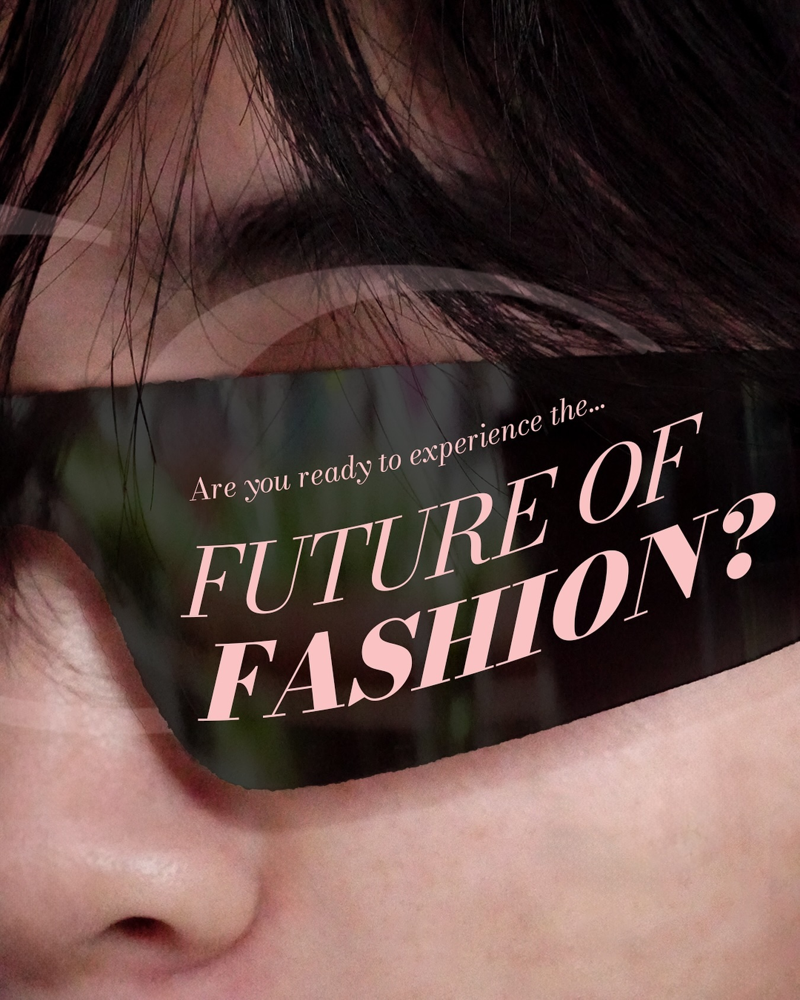
The challenge
An AI-powered personal styling app needed a name – and an identity – that could hold its own in a crowded, fast-moving market. It had to feel smart, accessible, and fashion-credible all at once. Not easy.
What I did
I named the brand Dappa – a word that does two things at once. It nods to looking dapper, and it contains the word 'app'. The best names introduce the business. I then developed the verbal identity around it: a brand voice built on confidence, self-expression, and the idea that owning your look can change your world.
The outcome
A brand name with genuine memorability and a proposition to match: What do you call your daily style muse? Say hello to Dappa – the AI stylist in the palm of your hand.
05
Mercha
Naming, Brand Identity & Messaging
Mercha
Naming, Brand Identity & Messaging
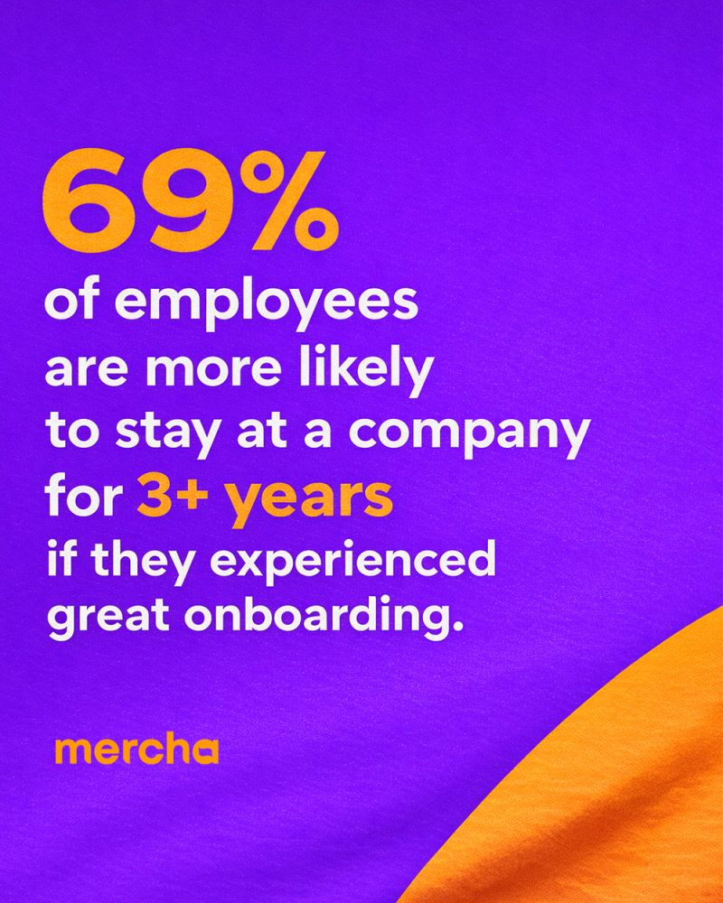
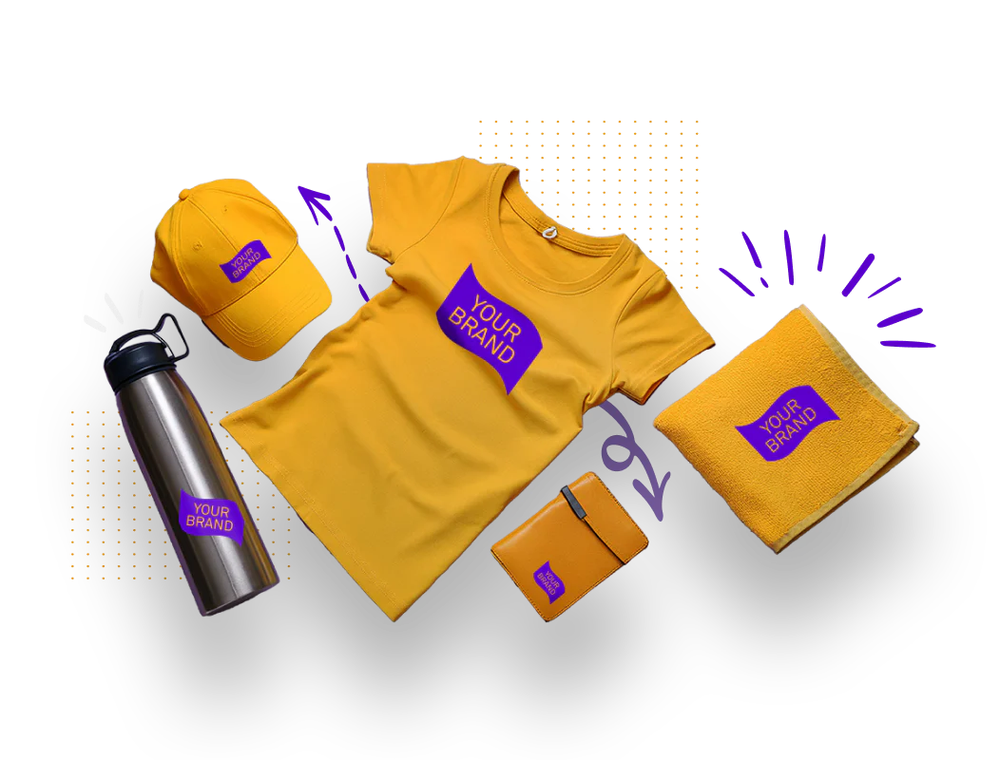
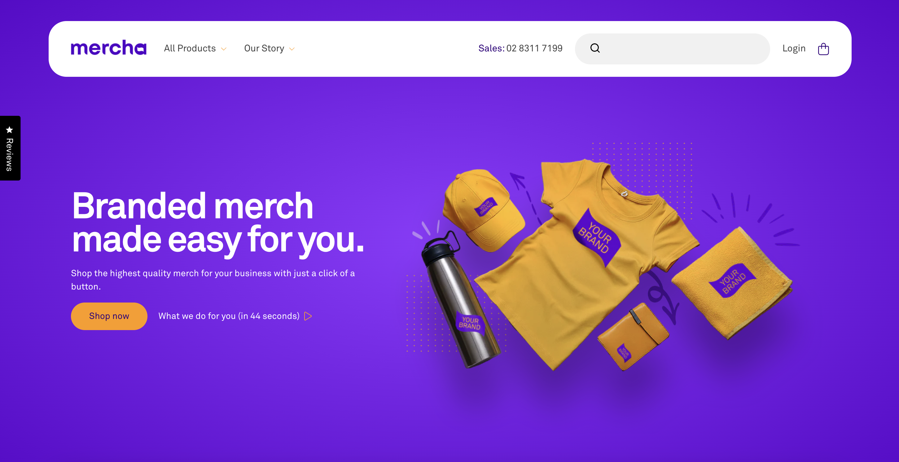
The challenge
The promotional merchandise industry is worth A$127 billion and deeply fragmented – slow, opaque, and full of low-quality product that ends up in landfill. Mercha's founders had a better model: an 'Easy As' online experience delivering genuinely good merch, fast. But to disrupt the category, they first needed to exist – name, brand, messaging, the lot.
What I did
I named the business Mercha – a name that does what it says on the pack. It's immediately clear, highly searchable, and built for the digital-first world the founders were creating. I then developed the full brand identity, messaging framework, and communications platform, including the brand promise: Cool merch people will wear out, not throw out.
The outcome
A complete brand from the ground up – name, voice, and positioning – built to take on a $127B industry. Design. Order. Delight.
06
Envoy English
Naming & Verbal Identity
Envoy English
Naming & Verbal Identity
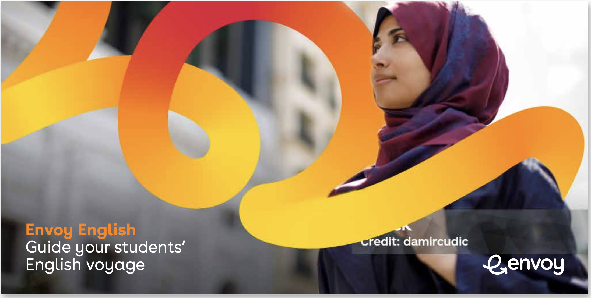
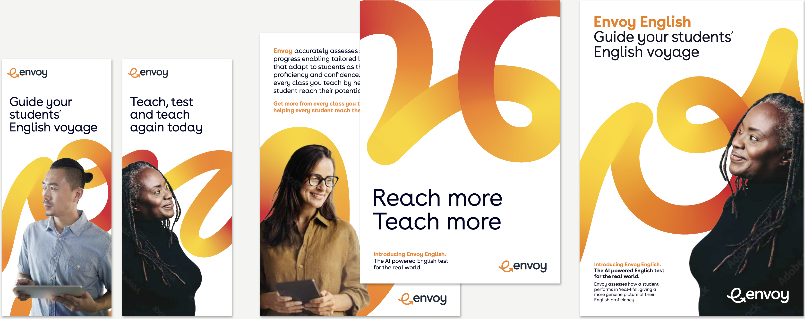
The challenge
IDP Education – one of the world's largest English language testing organisations – had built a new AI-powered English test from scratch. It needed a name, a voice, and an identity that could stand on its own in a competitive global market. The brief: something that captured both the precision of testing and the human journey of learning a language.
What I did
Working with PUSH Collective, I named the test Envoy – a word that speaks to guidance, progress, and the idea of accompanying students wherever they are on their English voyage. I then built the full verbal identity: brand voice guidelines that gave Envoy a distinct, human tone in a category that tends toward the clinical.
The outcome
A name and voice for an AI-powered test that feels genuinely human. Test what matters. Measure what counts. Envoy English launched with a clear positioning, a coherent brand world, and a platform built to scale globally.
07
Western Sydney University
Campaign & Student Recruitment
Western Sydney University
Campaign & Student Recruitment

The challenge
Western Sydney University had bold ambitions – launching a brand new campus in Surabaya, Indonesia, and recruiting students from across Southeast Asia. A world-class Australian university entering a new market, with no local brand recognition and everything to prove.
What I did
I led an 18-month launch program, building a small team and running activations across digital media throughout Southeast Asia. Recruitment and awareness campaigns spanned TikTok, Meta, YouTube and conventional media including OOH and direct mail – all built around a single rallying idea: Find your future.
The outcome
The campaign exceeded every metric of success – driving awareness of the WSU brand, the new Surabaya campus, and delivering strong student recruitment results across the region.
Brands I've worked with
Telstra · CBA · Credit Suisse · Fleetcard · Challenger Investment Management · Orange · AGSM · EML Payments · Pfizer · KIA · Toyota · UBS · EG Funds · University of Sydney · Unilever · IDP Education · ACU · Stockspot · DTCC · Teachers Mutual Bank · SIAA · UNSW · IBM · Microsoft · Conga Foods · Aware Super · University of Hull · KIT Money App for Kids · Kotex · Chris' Foods · Princess Yachts · Jobs Australia · Swazi Outdoors · BUCKN'BASS and many others.